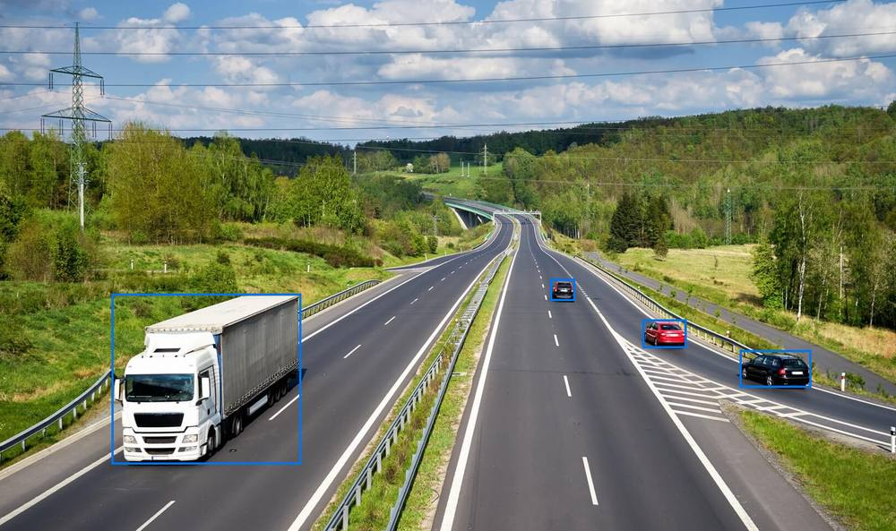
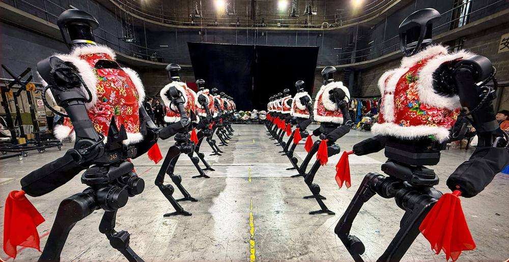
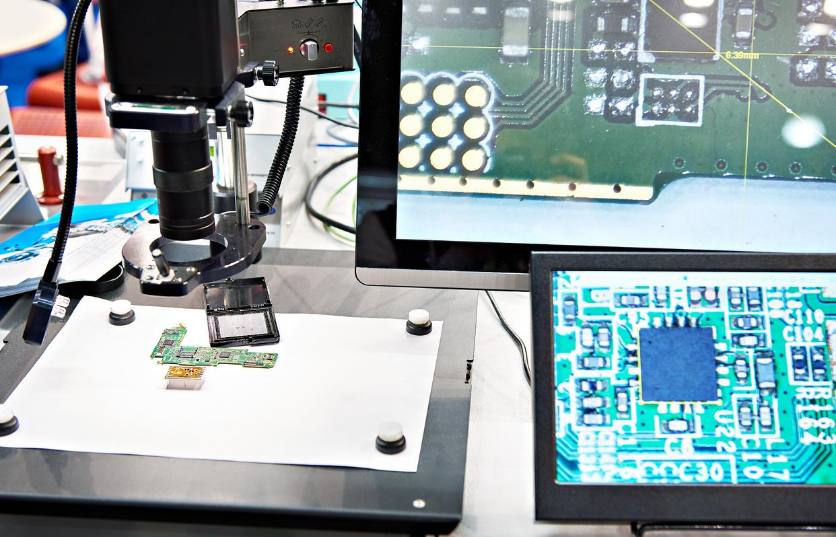
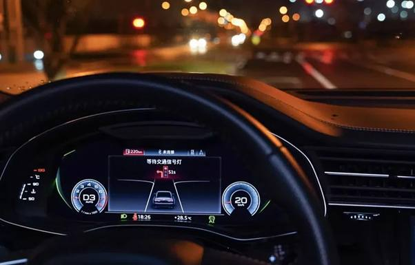
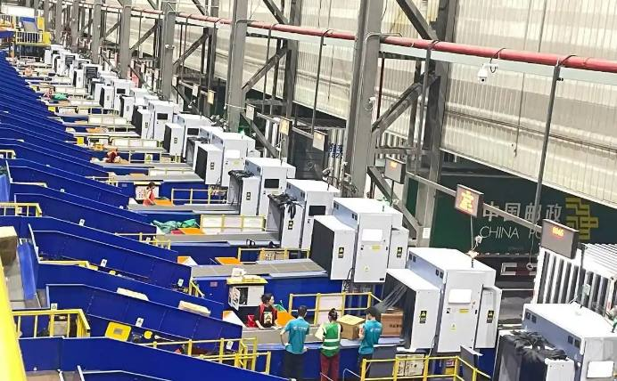

第 1 页 · 1 计算机视觉概述
1 计算机视觉概述

模块4：体验计算机视觉


第 2 页 · 智能交通
智能交通
春晚机器人

为啥机器能看见？


第 3 页 · 一、什么是计算机视觉
一、什么是计算机视觉
计算机视觉（Computer Vision，CV）：旨在通过算法和模型，使计算机能够从数字图像或视频中自动获取、处理、分析和理解高层信息。
计算机视觉
计算机图像学
模式识别
机器学习
认知科学
神经科学
心理学…
看的能力
理解
小孩、楼阁、
树木、地点等
第 4 页 · 让机器从像素中获取高层语义
让机器从像素中获取高层语义
计算机视觉（Computer Vision, CV）研究如何让机器从数字图像与视频中
提取、处理并理解有意义的信息。
它的输入是数百万个像素值，输出是对场景的判断：这是什么物体、它在哪里、彼此是什么关系、正在发生什么。
在人工智能版图中的位置
认知层：推理 · 决策 · 规划
感知层 · 视觉
感知层 · 语音 / 文本
一次视觉理解的数据流
图像 / 视频输入
特征提取
语义理解
决策 / 动作输出
【备注】先给一个最朴素的定义。计算机视觉就是让机器看懂图像。关键在于它处理的输入和人不一样：人看到的是物体，机器看到的只是一个个像素的亮度和颜色数值。右上角这张分层图说明它在 AI 中的位置——视觉和语音、文本一起构成感知层，上面才是推理决策。底部这条流水线就是一次典型的视觉计算过程。
第 5 页 · 机器看到的只是像素，理解世界远不止于看见
机器看到的只是像素，理解世界远不止于看见
01
成像条件多变
同一物体在不同光照、视角、距离、遮挡、天气下，像素分布几乎完全不同。
02
语义鸿沟
底层像素的统计规律与人类理解的"这是一只猫"之间，存在难以直接映射的鸿沟。
03
类别长尾与遮挡
物体姿态万千、相互遮挡、频繁截断；稀有类别样本稀少，模型难以全覆盖。
04
标注成本高昂
像素级分割、关键点标注需要大量专业人力，数据规模直接决定模型上限。
05
精度与实时的权衡
自动驾驶、手机端侧等场景要求毫秒级响应，模型必须在精度、速度、功耗间取舍。
【备注】为什么这件事做了六十年才逐渐成熟？因为对机器而言，图像就是一个数字矩阵，里面没有"猫"这个概念。光照变了、角度变了、物体被挡住了，像素就全变了。再加上标注昂贵、长尾类别难学、端侧还要跑得快，这五点共同构成了计算机视觉的核心难题。理解了难在哪，后面看技术演进就会很自然。
第 6 页 · 任务层层递进：从"是什么"到"在哪里"再到"每个像素"
任务层层递进：从"是什么"到"在哪里"再到"每个像素"
| 任务 | 它要回答的问题 | 输出形式 | 代表方法 |
| 图像分类 | 整张图里最主要的物体是什么？ | 一个类别标签与置信度 | ResNet、ViT |
| 目标检测 | 物体有几个、分别在画面哪里？ | 边界框 + 类别 + 置信度 | Faster R-CNN、YOLO |
| 语义分割 | 图中每一个像素属于哪一类？ | 像素级类别掩码 | FCN、U-Net |
| 实例分割 | 同类物体中的每一个个体在哪？ | 逐实例的像素掩码 | Mask R-CNN |
理解精度逐步提升：从整图打标签，到框出物体，再到逐像素区分每个个体。
【备注】计算机视觉的任务可以按理解精度排成四个层级。最基础的是图像分类，判断整张图是什么；往上是目标检测，要框出物体位置；再往上是语义分割，给每个像素分类；最难的实例分割，要把同类的不同个体逐个分开。自动驾驶、医疗影像这些真实系统，往往是这几个任务组合起来用的。
第 7 页 · 机器学习的一般流程
机器学习的一般流程
二、机器的视觉是如何实现的
是整个计算机视觉系统的“眼睛”，是所有后续视觉分析与决策的基石。它的核心任务是通过成像设备将物理世界中的视觉信息（光信号）转换为计算机能够处理的数字化数据（数字图像）。
第 8 页 · 机器学习的一般流程
机器学习的一般流程
二、机器的视觉是如何实现的
是计算机视觉系统的计算引擎，主要完成图像预处理和增强，旨在净化与优化原始数据，为后续算法模型提供高质量输入。
第 9 页 · 机器学习的一般流程
机器学习的一般流程
二、机器的视觉是如何实现的
是计算机视觉系统的“大脑”，主要完成图像特征提取和图像理解两项工作。将视觉数据转化为可理解、可操作的语义信息（如回答图像是什么、图像中有哪些目标、图像中物体的轮廓在哪儿等），从而实现计算机“看懂”世界的能力。
第 10 页 · 三、计算机视觉的典型应用
三、计算机视觉的典型应用
典型应用
新能源汽车信号灯感知
电子制造芯片检测
物流智能分拣
人脸认证进站



第 11 页 · 视觉能力已经渗入几乎每一个行业
视觉能力已经渗入几乎每一个行业
自动驾驶
感知车辆、行人、车道与障碍物，是智能驾驶的环境理解基础。
医疗影像
辅助读片、病灶检测与分割，提升筛查效率与一致性。
工业质检
高速流水线上的缺陷检测与尺寸测量，替代人工目检。
安防监控
人脸与车牌识别、异常行为预警，构成城市感知网络。
消费电子
人脸解锁、人像模式、智能相册与拍照美化的底层能力。
遥感与科研
卫星影像地物分类、气象分析，以及科学图像的自动解析。
【备注】落到真实世界，计算机视觉的应用已经非常广泛。左边这一排是产业侧：自动驾驶靠它感知环境，医疗影像用它辅助医生读片，工业流水线上用它做缺陷检测。下面这一排是更贴近日常的：安防监控、手机里的人脸解锁和人像模式，以及卫星遥感对地观测。可以说，凡是有摄像头、有图像的地方，几乎都有视觉模型在背后工作。
第 12 页 · 离真正的"看懂"仍有距离：五个未解难题
离真正的"看懂"仍有距离：五个未解难题
01
泛化能力脆弱
换个角度、背景或加入微小扰动，准确率就可能骤降；面对分布外样本尤其不可靠。
02
数据依赖与偏见
模型性能受制于标注数据；训练集中的人群、场景偏差会被放大成歧视性结果。
03
黑箱与可解释性
模型难以说明"为什么这么判断"，在医疗、驾驶等高风险场景难以被完全信任。
04
算力与能耗成本
大模型训练与推理消耗大量算力与电力，端侧部署仍需在精度和功耗间精打细算。
05
伦理、隐私与安全
人脸与影像涉及个人隐私，深度伪造、对抗攻击也带来新的安全与治理挑战。
【备注】成绩之外也要冷静看局限。第一，模型很脆，换个场景就可能失灵；第二，它高度依赖数据，数据里的偏见会被学进去；第三，它是黑箱，出了错很难解释；第四，越好用的模型越烧钱、越耗电；第五，它直接关系到隐私、深度伪造和安全。这些问题正是当前研究和工程界在努力解决的方向。
第 13 页 · 未来三个方向：更通用、更轻量、更会动手
未来三个方向：更通用、更轻量、更会动手
TREND 01
多模态统一理解
视觉与语言不再分家：模型能看图说话、回答关于画面的问题，成为通用助手的视觉入口。
TREND 02
少标注的基础模型
自监督预训练 + 大规模无标注图像，一个基础模型微调即可适配大量下游任务，降低标注依赖。
TREND 03
端侧与具身智能
模型直接跑在手机、摄像头和机器人本体上；视觉成为机械人感知环境、自主行动的"眼睛"。
【备注】最后看三个趋势。第一，多模态，视觉和语言打通，模型能像人一样边看边理解。第二，基础模型加自监督，用海量无标注数据预训练，减少对昂贵人工标注的依赖。第三，模型往端侧和机器人走，视觉不只是看图，还要变成机器人体现在物理世界里的眼睛。这三条线合起来，就是计算机视觉下一步的主线。
第 14 页 · 畅享计算机视觉的新场景
畅享计算机视觉的新场景

讨论计算机视觉在未来的新场景应用
| 场景 | 用于描述 | 意义或价值 |
| ①具身机器人 | ||
| ②全天候安保 | ||
| ③工业检测理解 | ||
| ④智慧城市主动治理 | ||
| ⑤洞察物理世界 | ||
| …… |
第 15 页 · 学生分享及教师点评
学生分享及教师点评

| 分享要点 | 分值 | 计分 | 教师点评 |
| 1、你的想法来自哪里？ | 10 | 头脑风暴、独立思考 | |
| 2、你的研讨是否有其他学生参与？ | 10 | 集思广益、团结协助 | |
| 3、计算机视觉技术对场景应用的革命性影响？ | 30 | 积极思考、敢于天马行空 | |
| 4、如果要选择一个CV技术最有影响或价值的场景，你的选择是？ | 20 | 价值思维，前瞻能力 | |
| 5、CV技术发展新的方向 | 20 | 打破常规，展望未来， | |
| 6、其它（含逻辑、表情、主动、清晰、流畅、自信等） | 10 | 能说、亲和、善用、精技 |
第 16 页 · 子任务3：语音提示处理
子任务3：语音提示处理

视通万物
以智赋行